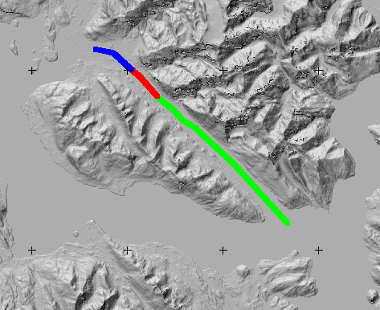
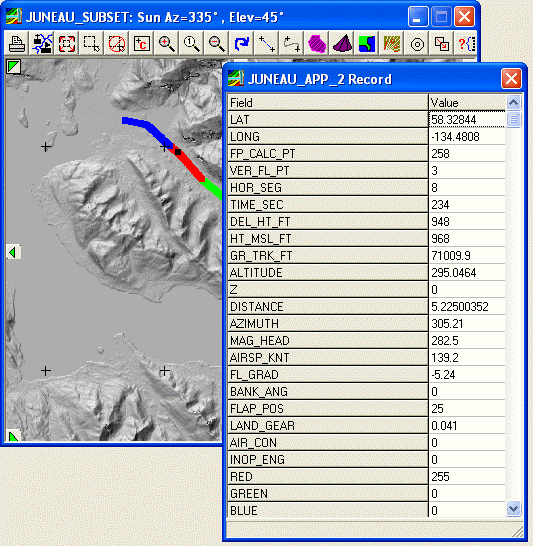

Flight Path Display and 3D Views
 New DEM: Open a DEM covering
area.
New DEM: Open a DEM covering
area.
 New image to
display or drape path on satellite image.
New image to
display or drape path on satellite image.
 Database
Open DBF file with the flight path
database on Map window toolbar.
Database
Open DBF file with the flight path
database on Map window toolbar.
 |
Map with flight path indicated. To get it color coded, use the "Plot, Color code by field in data base" option on Plot button of the Table display window. These colors are from the RED, GREEN, and BLUE fields in the database, which run from 0 to 255. The path above is coded by the changes in air speed--the green and blue segments are constant speed, and the red is a decelleration. |
 |
On the flight path map, you can get the information
about any point. Pick the ID button, either on the Map window toolbar or the database table display window, and then double click on a point along the trail. The selected point is indicated with a small black square. |
 |
We will have to work on query on points along this path and displaying the information. OpenGL is supposed to have such capability, but we have not used it to date. We could color code based on any of the parameters in the flight path. View can be rotated and zoomed. |
 |
From Stats button on
the database
table display pick the "2D graph, two series".
The red line shows the flight altitude, and the blue the
terrain under the flight path. Note that around 19 km the flight path is not high enough to clear the terrain. |
 |
Map showing where the flight path is below the
ground. From Edit button on the database table display pick "Field arithmetic, Difference between two fields" and get the difference between the ALTITUDE and Z fields. The from the Plot button, pick the Color code by numeric field and pick the Positive/negative color scheme. You could also filter for the new field values below 0, and plot them. |
Last revision 4/18/2013